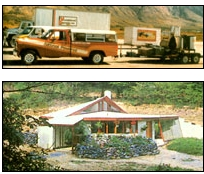

More Than A Magazine
Doyle's memories of the original staff of The Mother Earth News magazine.
By Ned Ryan Doyle
October/November 2003
MOTHER's Memories
By Ned Ryan Doyle
I discovered my first issue of the Mother Earth News in 1974. Immediately it struck me that something was very different about this magazine. It was filled with practical, realistic advice, information and projects all centered on sustainable living with respect for the Earth. I was hooked on "MOTHER" with that one issue. Like thousands of others at the time, I felt it was far more than a how-to publication; it was a magazine with a larger message that spoke to the people. The articles and editorials addressed very real concerns about the environment, about the absurdity of relying on fossil fuels, about false economics and a myriad other issues, nearly all of which, sadly, we still face today. At the same time, Mother Earth News offered proven alternatives for making our lives better, affordable ways to reduce the impact on our planet and rational options for living a joyful life.
The message and methods found in the pages of MOTHER touched tens of thousands, then hundreds of thousands of people. The common sense, down-to-earth information was for real people living real lives. It inspired many regular, down-home folks to take more control over their lives, including myself. In 1979 I went to Hendersonville, North Carolina, for the very first of MOTHER'S Seminars. After only one week, I shamelessly begged for a job ... and got one!
My years with MOTHER, from 1979 to 1985, rank among the best times of my life. I was a part of MOTHER 's Ethanol Fuel and Low-Cost Solar tours that crisscrossed the United States, stopping in dozens of cities and towns to offer how-to workshops on producing fuel ethanol and building extremely low-cost solar systems for hot water or space heating. I also worked as a coordinator and instructor at MOTHERS 622-acre Eco-Village Research Center and helped with the original MOTHER'S Chapters Organization that connected like-minded folks together in a cooperative spirit for work projects (and often lots of play). People often ask, "Wow, what was it like? It must have been exciting to work on those projects!" My answer never varies: "It wasn't so much the projects, it was the people who were exciting."
Don't get me wrong. Building a passive-solar, earth-sheltered, 1,000-square-foot home for a family of four (complete with greenhouse, permaculture gardens and microhydro generator) for less than $10 a square foot was exciting. Building cordwood barns, towers and domes was exciting. Being one of a dozen staffers who taught hundreds of workshops each year on topics ranging from beekeeping, composting toilets and wind power to bread-baking, photovoltaics and cordwood construction to thousands of summer visitors at the Eco-Village was exciting. Demonstrating a fully functional, 8-gallon-per-hour, 190-proof ethanol fuel still in cities around the United States usually under the watchful eyes of agents from the Bureau of Alcohol, Tobacco, Firearms and Explosives, was exciting. Visiting MOTHER's Chapters across the United States and Canada was exciting. But, the people who made all these projects happen, well, that's where the real excitement was and where my memories go.
Months on the road teaching thousands of folks to build their own ethanol stills and solar systems day after day, week after week, could have been tedious and exhausting, but the endless enthusiasm of our team and the great people we met along the way made it fun and invigorating.
Back at the Eco-Village the collective can do spirit of dozens of folks made it a magical place. Yes, it was exciting to see new projects take shape each year, from harnessing hydropower from the Eco-Village lake and installing a Jacob's wind-electric system, to building the now infamous, blazing yellow-Minto Wheel - a two-story-tall contraption that harnessed solar-heated water and converted it into mechanical energy (well, kind of), but the real excitement and memories came from teaming up with those wonderful people.
We assumed we could do anything and, frankly, we pretty much did. We worked hard, thought creatively and things came together. For example, we knew that commercial solar hot air systems had the fastest payback period-our challenge was to make them even less expensive, which we did by building hot air collectors out of free, discarded fluorescent glass tubes and old tin cans.
One day, my group, which was working on alternative fuels, was summoned into MOTHER's main office and issued a challenge: "We want a truck that runs on wood chips instead of gas to compete in a cross-country alternative vehicle race against a wide field of competitors that will be followed by the national media. We want it to be ready in a month and we want to win this race. Any questions?"
We looked at each other in silence for a few seconds until, without really thinking, I blurted out, "I have one question. What col or do you want us to paint it?" We were that confident. And yes, the MOTHER team won the race.
But among the people who live in my memories of MOTHER, two top the list: John and Jane Shuttleworth, the founders of the Mother Earth News. It would be presumptuous to claim I knew precisely what motivated them, but what I saw was a fervent desire to make a difference by gathering and sharing information, offering readers bootstrap strategies for self-reliant living, and boldly proclaiming the obvious about renewable energy, clean living and sound principles of sustainable economics. While the entire staff labored for countless hours, for months and years, John and Jane worked harder than anyone to fulfill their vision.
From 1970, when MOTHER was launched from a kitchen table, even past the time I joined in 1979, these two people were always in the middle of the action and at the heart of our mission. John and Jane proved individuals can make a big difference in the world. They excited us into doing the right things for the right reasons and are among the ones who keep me excited and motivated even today, nearly 20 years later. For me, MOTHER has been so much more than a magazine-it's been my way of life.
Ned Doyle lives off-grid in a passive-solar, earth-sheltered structure in western North Carolina. He is currently the Coordinator of the Southern Energy & Environment Expo ( www.seeexpo.com ).
Thanks for the memories, MOM! On the road: Beach, John, B.V. Richard and Ben; At the Eco-Village: Jay, Dennis, James, Leroy, Ricky, Henry, David, Norman, Bob, Kerry, Barbara, Franklin, Susan, L. T, Emerson, Robyn, Kathy, Dot, Richard, Lynda, John, Don, Janis, Red, Bev, Lucy, Dave, Clarence, Cory, Rob, Jack and many more. Behind the desks and at the drawing boards: Mark, Don, Richard, Mary Jo, Anita, David, Susie, Marsha, Jack, Steve, Joanne, Lorna, Barb, Solar, Bruce, Terry, Wanda, Fran, Ken, Kathleen, Sara, Wendy and Ted. Thanks to everyone!-Ned
Mother Earth News
 Ned Ryan Doyle From top to bottom: Beach Barrett (left) and the author (right) with a home-built, solarpowered, vacuum ethanol column (San Diego, California, 1982); A wee generation of Mother Earthers; Visitors to MOTHER's Eco-Village benefit from hansom, Show-How workshops (1982). |
 Ned Ryan Doyle MOTHER's research team hits the highways in their fleet of alcohol- powered vehicles, with their portable still and low-cost solar systems trailer (Montana, 1982); MOTHER builds an energy-efficient, earth-sheltered house for $10 per square foot (1983); |
|